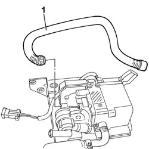
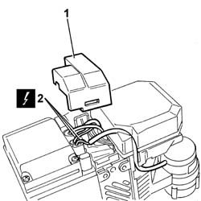
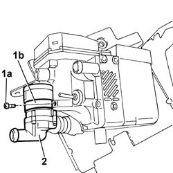
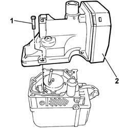

5020M86 FAN FOR ADDITIONAL HEATER UNIT - R.R.
- Path
- Procedures > 50 AUXILIARY UNITS > 5020 HEATER > 5020M SUPPLEMENTARY INDEPENDENT HEATER > 5020M86 FAN FOR ADDITIONAL HEATER UNIT - R.R.
- Kind
- repair procedure (removal / refitting; the operation number is the code)
- Applies to
- all engines; all production periods
- Interactive page
- https://sloeber94.github.io/elrnDB-fDct/en/#/244001262
Applies to: all engines; all production periods
 Removing
Removing
 Refitting
Refitting- Disconnect the negative battery terminal.
Op. 5020M10 INDEPENDENT HEATER UNIT - R R
1. At the bench, disconnect the inlet pipe loosening the retaining bands.

Applies to: all engines; all production periods
1. Remove the electrical connection protective cover.
2. Disconnect the electrical connectors.

Applies to: all engines; all production periods
1. Undo the bolts (1a) fixing the water pump bracket (1b).
- Remove the band fastening the flexible pipe to the pump.
2. Remove the water pump.

Applies to: all engines; all production periods
1. Undo the bolts fixing the fan assembly.
2. Remove the fan assembly.

Applies to: all engines; all production periods
Refitting
Removing- Fasten the fan assembly to the independent heater casing tightening the fixing bolts.
- Place the water pump in the correct fitting position.
- Fit the flexible pipe on the pump and secure it using the retaining band.
- Fasten the water pump to the independent heater casing tightening the bolt fixing the pump retaining band.
- Connect the electrical connectors and secure the protective cover.
- Fasten the air inlet pipe to the heater using the retaining bands.
Op. 5020M10 INDEPENDENT HEATER UNIT - R R
- Connect the negative battery terminal.